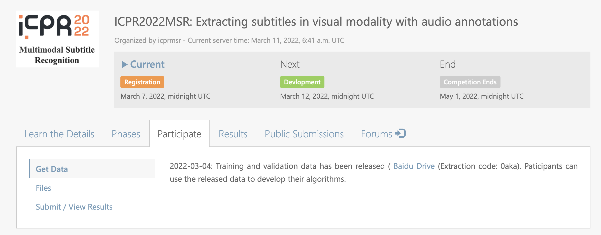

Updates and News
Big News !!! The top 3 teams in each track will receive cash rewards. The details of the rewards are as follows: Top-1: 3000$, Top-2: 1500$, Top-3: 800$. See more details of ranking rules in Evaluation .
Issues and Questions
For any questions, please send an email to lattehuang@tencent.com.
You can also join our WeChat group by scanning the code below:
Registration
We use CodaLab for the registration.
The sites for registration are subtaks1, subtaks2,
subtaks3.
If you do not have the account of CodaLab, please create an account.
Here, we provide an example to help participants to complete the registration of the subtask1.
Step 1: Click the subtask1.

Step 2: Click the button Participate.

Step 3: Accept the terms and conditions.

Step 4: Click the button Register.

Then, the website turns to:
It means that you are successfully completing the registration.
Subtask2 and Subtask3 are the same as Subtask1.
And we will process your registration as soon as possible.
Upon we accept your registration, you will see the link for the training data.

Submission
We use CodaLab for online submission in the development phase. Here, we provide an example to help participants to format their submissions. The sites are for the subtask1 , subtask2 and subtask3, respectively.
Introduction
In recent years, with the rapid rise of short videos, live broadcastsand other media-based applications, the widespread transmission of video data has led to a significant increase in user-generated content. A wide variety of creative platforms and pattern have emerged, and media publication criteria is becoming more and more civilian, leading to more complex and dynamic acoustic scenes in various long or short video and live streaming. The problems of video subtitle recognition and speech recognition under various scenarios have been of considerable concern by researchers. The development of methods accurately recognize and understand various types of video content has become an indispensable tool in downstream applications such as subtitle creation, content recommendation, digital media archival, and so on. In this challenge, we focus on extracting subtitles from videos using both visual and audio modalities. Most previous works exploit it with a single modality , and each modality has its own advantages and annotation difficulties on various types of training data. To this end, we present tasks that explore the integration of the advantages of both video and audio modalitioes. We expect to obtain high precision subtitles with lower annotation costs, thus expanding the scope of practical applications.
Description of the Challenge
Subtask 1: Extracting subtitles in visual modality with audio annotations
To extract subtitles from video frames, a large number of keyframes should be
annotated with bounding boxes and contents, which is extremely costive. However,
speech transcripts are much easier to obtain, and they contain almost all the content of
the subtitles. In this subtask, we present a challenge that explores learning visual
subtitles with the supervision of speech scripts. We expect that the annotation from
the audio modality can improve the subtitle extraction from the visual modality.
In this subtask, we will present 75h of video content, divided into set of 50, 5, 20 as
training, validation, and testing sets, respectively. For the training set, only audio
annotations will be provided. The participants are required to design subtitles OCR
system with these annotations. To pretrain an OCR system, participants can also use a
limited number of open datasets, and fine-tune their model with audio supervision.
Under these conditions, will be asked to produce subtitle text for each video in our
testing set, and the submitted results will be ranked using the CER metric.
The site for the submission is subtask1.
Subtask 2: Extracting subtitles in audio modal with visual annotations
In speech recognition tasks, especially in video speech recognition tasks, audio data
are difficult to label owing to background music, sound effects, or noise. However, all
texts information including subtitles in the video can supply weakly labeled
information.
There are lots of videos with subtitles. Some texts information including
subtitles are manually generated, whereas some are automaticly generated.
Although the quality of automatic subtitles may be worse than that of manual subtitles, they are
often available in much greater quantity.
Therefore, this task considers the use of
visual annotations in videos, especially automatic annotations to assist in building an
ASR system.
In this subtask, the participants will be required to use only visual annotations to
build an ASR system for the corresponding videos. To improve the robustness, some
public ASR data in the following tables may be used as well. We will also provide a
baseline model. The submitted results will be ranked with the CER metric on our
testing set.
The site for the submission is subtask2.
Subtask 3: Extracting subtitles with both visual and audio annotations
In this subtask, for the training set, we present 50 hours of video content with both the
visual and audio supervisions and 200-hour video content with no annotation.
Another 20 and 5 h of videos will be provided to serve as validation and testing sets, respectively.
For the visual annotation, we will provide characters of all text in key frames, we will present speech transcripts of
each VAD segment or the audio modal. With these data, participants will be required to produce
subtitle for each video in our testing set, and the submitted results will be ranked with
the CER metric.
The site for the submission is subtask3.
Datasets
We present a large-scale video dataset with 75 hours of video content, among which 50/5/20 hours are used for training, validation, and testing, respectively. Both visual (weak) and audio annotations are provided. Moreover, additional 200-hour unlabeled video content is provided as an unsupervised training resources.
Visual annotation:
For each video, we will provide pseudo-subtitles along with their locations and
timestamps. In the creation stage, our video OCR system results are generated and
corrected in combined with ASR ground truth labels as follows:
Step 1: We extract five frames per second from videos, and then detect and recognize
the text in the frames with the high-precision TencentOCR systems. We save all the
text lines as the visual annotations, and they are used for the subtask 2.
Step 2: To identify the subtitle text, we compare the OCR results with the ASR
ground truth to determine which text lines belonge to the subtitles, and take the
corresponding bounding boxes, and recognized text as the subtitle pseudo-
annotations.
The location is presented as a bounding box with the coordinates of the four
corners. The timestamp can be obtained with the frames per second (FPS) of the video
and the index of each frame.
The annotation has the following format for a subtitle:
{
"video_name": video_name,
"frame_id": frame_id,
"bounding_box": bounding_box,
"text": text,
}.
For example, for a video named "TV_00000001", all of the texts in a frame, including one subtitle in the red box, has annotations shown belows :

{
"video_name": "TV_00000001",
"frame_id": 100,
"content": {
"text":"BTV",
"text":"北京同仁堂",
"text":“冠名播出”,
"text": "都放在你这个手指的动作上面", },
}.
Audio annotation:
For each audio clip, we will provide their text and segment file in terms of the KALDI
format (https://kaldi-asr.org/doc/data_prep.html). The segment file is the start and end
time of VAD segments for each audio clip.
text: TV_00000001 都 放在 你 这个 手指 的 动作 上面
segments: TV_00000001 TV 0 3.259
wav.scp: TV_00000001 TV.wav
Evaluation
The participants are required to output non-repeating subtitles and concatenate them
for each video. For a given video, subtitles of adjacent frames may be the same, and
the participants are required to deduplicate them and output subtitles. Normalized
metric in terms of Normalized Edit Distance (1-N.E.D. specially) will be treated as
the official ranking metric.
We will evaluate the predicted transcription with
the Normalized Edit Distance (N.E.D), which is formulated as:

where D(:) stands for the Levenshtein Distance, and and denote the predicted
subtitles in string and the corresponding ground truths for each video. N is the
number of the test videoes.
On March 12, organizers provide the training set with annotations. Each task has 50 hours of video data.
Participants are required to develop corresponding models according to the requirements of each track.
On April 22, the organizers will provide the validation set without annotations. And each track contains 20 hours of video data.
Participants predict subtitles of each video, and submit the prediction results to the CodaLab website.
The organizers will give the ranking on the validation set according to the prediction result.
On May 7th, the organizers will provide the test set (including 5 hours of video data) without annotations.
It is required that the top ten participants of each track in the validation set be within two days (that is, before May 9th).
According to the video data in the test set, top ten participants on the validation set are required to predict the subtitles in the video,
and submit the prediction results to the CodaLab website.
Finally, the final rank of each track = 50% * rank on the validation set + 50% * rank on the test set .
The test set will be announced on the official website (icprmsr.github.io) after May 9,
and the final ranking information of the participants will also be announced on the competition website,
and the participants will be notified by email.
Deadlines
| Milestone | Date |
| Registration period | Mar 7, 2022 - |
| Data release | Mar 12, 2022 |
| Development period | Mar 12, 2022 - Apr 22, 2022 |
| Evaluation period | Apr 22, 2022 - May 7, 2022 |
| Release of evaluation dataset | Apr 22, 2022 |
| Deadline for submission of results | May 7, 2022 |
| Deadline for submission of method descriptions | May 12, 2022 |
| Announcement of evaluation results | May 13, 2022 |
| Competition paper submission | May 20, 2022 |
Contact information for the organizers
Shan Huang, Tencent, lattehuang@tencent.com
Shen Huang, Tencent, springhuang@tencent.com
Li Lu, Tencent, adolphlu@tencent.com
Pengfei Hu, Tencent, alanpfhu@tencent.com
Xiang Wang, Tencent, andyxwang@tencent.com
Jian kang, Tencent, jiankang@tencent.com
Lianwen Jin, South China University of Technology, eelwjin@scut.edu.cn
YuLiang Liu, Huazhong University of Science and Technology, ylliu@hust.edu.cn
Yaqiang Wu, Lenovo, wuyqe@lenovo.com